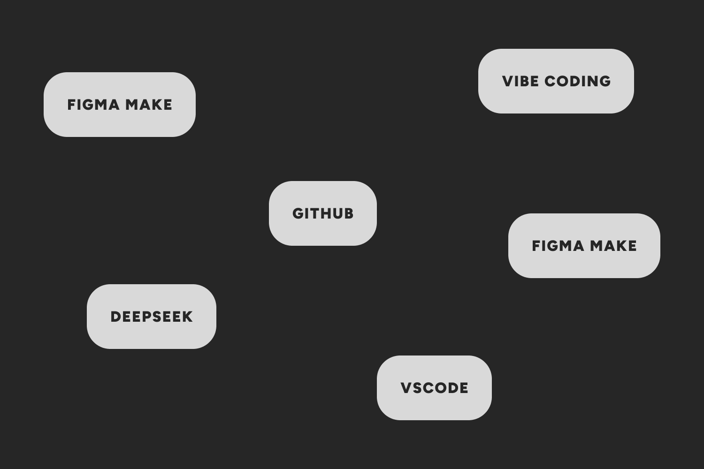
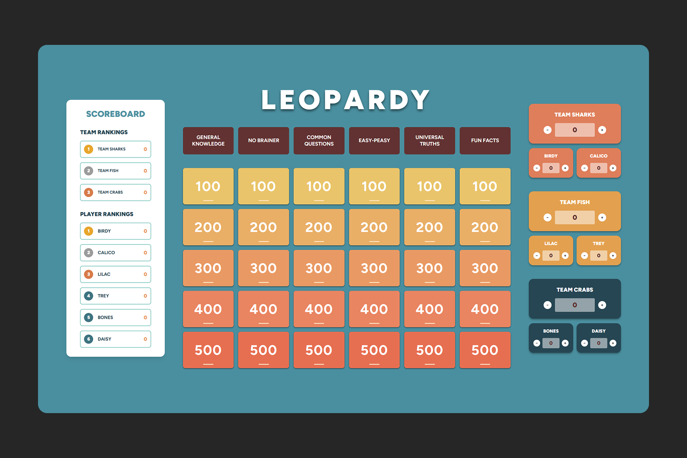
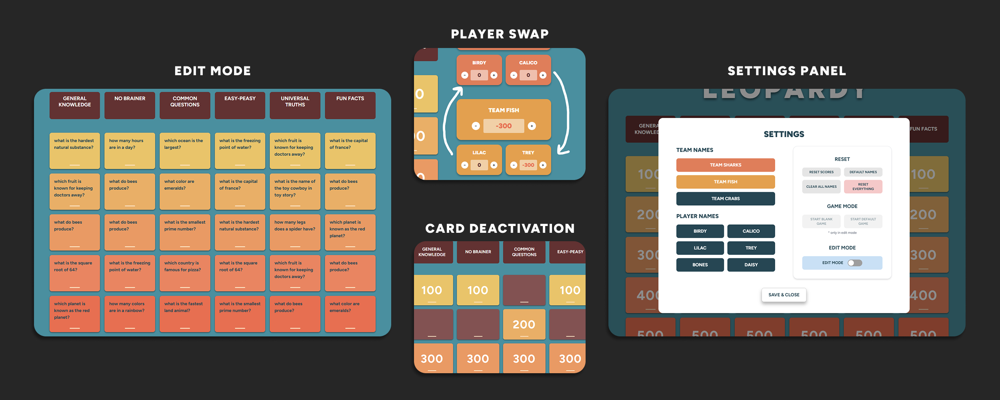

Leopardy
Case Study of Leopardy, a custom game board
The Problem
Running a trivia game night is fun, but keeping track of scores and managing questions can get really tiring. I created Leopardy to solve that problem and let hosts focus on the game while keeping pretty aesthetics.

Overview
What is interesting about this project is how it was made. I designed the interface in Figma, then worked
with AI tools to build the actual app. The layout is straightforward. The main section holds the game board
with category cards and point values. On the left, you see live rankings for teams and players. The right
panel is where you control scores. Fun fact, there was absolutely zero hand coding involved!

The Process
Creating this project was one of the most engaging experiences I had. I challenged myself to only use vibe
coding in order for me to understand it better. The excitement of creating something I would use made me
excited to keep working on this project. One feature I really wanted was the ability to change questions
easily. Instead of hidden menus, I built an edit mode. When you turn it on, you can easily change the text
of any point or category card. It makes updating the game feel immediate and intuitive. Balancing that kind
of flexibility with a clean layout took a few rounds of tweaking. After testing it with a few friends, I
smoothed out the details until everything just worked.
Growth and Insights
This project showed me that you do not need to be a programmer to build a functional web tool anymore. The
biggest challenge was figuring out what the app actually needed to do and designing it in a way that made
sense for people using it. Once the concept and layout was clear, the development part came together naturally.
It was super rewarding to see something I sketched in Figma turn into a real app that people could actually
use. Leopardy ended up being a good reminder that the right tools and a focused idea can turn a simple concept
into something genuinely useful.
